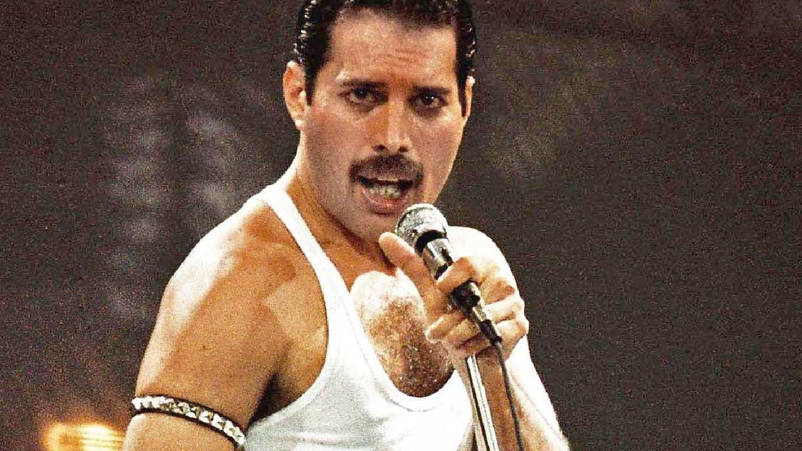

Freddie Mercury

Freddie Mercury performs on stage at Live Aid on July 13,1985. Picture: Peter Still/Redferns
Here are some notable events in his lifetime and legacy:
- 1946 - The life of Frederick Bulsara began on the East African island of Zanzibar on September 5, 1946.
- 1964 - The Bulsara family moved to Middlesex in 1964 and from there Freddie joined up with a blues band called Wreckage while studying graphic design courses at Ealing College of Art. While singing for Wreckage, a fellow student introduced Freddie to Roger Taylor and Brian May, founder members of a band called Smile. Smile metamorphosed into Queen when Freddie joined Roger and Brian as the lead vocalist. The final member of the band, which was to stay together for the next 20 years, was bassist John Deacon, who joined the band on 1st of March 1971.
- 1973 - The rest is rock history. EMI Records and Elektra Records signed the band and in 1973 their debut album ‘Queen’ was released and hailed as one of the most exciting developments ever in rock music.
- 1975 - The immortal operatically styled single ‘Bohemian Rhapsody’ was released in 1975 and proceeded to the top of the UK charts for 9 weeks. A song that was nearly never released due to its length and unusual style but which Freddie insisted would be played became the instantly recognisable hit. By this time Freddie’s unique talents were becoming clear, a voice with a remarkable range and a stage presence that gave Queen its colourful, unpredictable and flamboyant personality.
- 1981 - Through Freddie’s ability to project himself and the band’s music and image to the four corners of 70,000 seater venues they became known as the prime developers of stadium rock, a reputation perpetuated by their pioneering tactics in South America where in 1981 they performed to 231,000 fans in Sao Paulo, a world record at the time. They also became known as the key innovators of pop videos as their catalogue of 3-minute clips became more and more adventurous in style, size and content.
- 1985 - In the mid 80’s, Freddie started concentrating on his solo career, which was to run in tandem with Queen (“the mothership”) for several albums commencing with the 1985 release of ‘Mr. Bad Guy’.
- 1990 - Freddie returned to the studios to record ‘Innuendo’ with Queen in 1990.
- 1991 - On November 24th, 1991, Freddie’s struggle against AIDS ended when he passed away just over 24 hours after he had publicly announced he had the disease.
- 2010 - Despite twenty years having passed since Freddie lost his life to HIV complications, he remains in the minds of millions throughout the world as one of the greatest artists we will ever see. In September 2010 (coincidentally, around Freddie's 64th birthday) a poll carried out among rock fans saw him named the Greatest Rock Legend Of All Time, beating Elvis Presley to claim the title, and ahead of David Bowie, Jon Bon Jovi, Jimi Hendrix and Ozzy Osbourne.
- 2018 - GK Films, 20th Century Fox, Regency Enterprises, and Queen Films released a film called "Bohemian Rhapsody" giving tribute to Mercury's and Queen's career. Directed by Bryan Singer, the film has earned multiple awards.